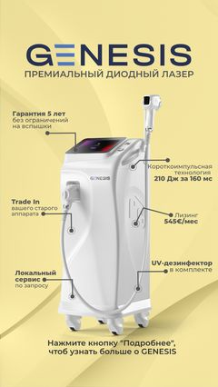
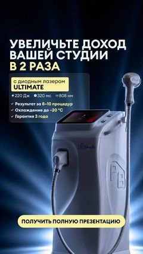
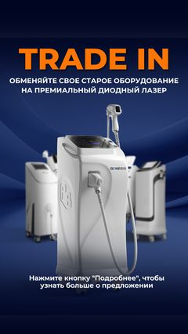

PROF BEAUTY · EU
Звіт з реклами · KPI 90 zł · валюта PLN · Липень – Вересень 2026
Період: 01.07 – 20.07 · зведено
Leads
122
Average CPL
131 zł
Spend
17 200 zł
Огляд по країнах
🇵🇱 Польща
Ліди51
CPL · KPI 90114 zł
Spend5 796 zł
🇨🇿 Чехія
Ліди34
CPL · KPI 90110 zł
Spend3 736 zł
🇩🇪 Німеччина
Ліди21
CPL · KPI 90172 zł
Spend3 621 zł
🇪🇸 Іспанія
Ліди16
CPL · KPI 90178 zł
Spend2 848 zł
🎯 Трафікові кампанії — spend 1 199 zł · оцінюємо за охопленням, не за лідами.
Динаміка по тижнях · ліди / CPL
- 1–5.07: 30 · 141 zł
- 6–12.07: 39 · 153 zł
- 13–19.07: 49 · 104 zł 🔽
Тренд: лідів більше з тижня в тиждень, CPL знижується — після переходу на відео Ultimate на інтереси.
Детально по країнах · запуски, креативи, фідбек
🇵🇱 Польща
Інтереси · статика

Static_Trade_in
11 лідів · CPL 124 zł

Static_Genesis
4 ліди · CPL 167 zł
Відео на інтереси

5. Upfront
10 лідів · CPL 64 zł 🔥

Ultimate · відео
7 лідів · CPL 129 zł

Costing
3 ліди · CPL 239 zł
Широка · нові креативи

Ultimate Blue
2 ліди · CPL 107 zł

Карусель
14 лідів · CPL 92 zł
🇨🇿 Чехія
Інтереси · статика
Static_Trade_in
9 лідів · CPL 133 zł
Static_Genesis
6 лідів · CPL 108 zł

Static_ДЛ_KHS
8 лідів · CPL 124 zł
Відео на інтереси
Ultimate · відео
11 лідів · CPL 82 zł ✅
🇩🇪 Німеччина
Інтереси · статика
Static_Trade_in
6 лідів · CPL 196 zł
Static_Genesis
1 лід · CPL 456 zł
Відео на інтереси
5. Upfront
5 лідів · CPL 108 zł
Ultimate · відео
1 лід · CPL 164 zł
Широка

Genesis
3 ліди · CPL 191 zł

Trade in
5 лідів · CPL 142 zł
🇪🇸 Іспанія
Інтереси · статика
Static_Trade_in
5 лідів · CPL 226 zł
Static_Genesis
3 ліди · CPL 118 zł
Відео на інтереси
Ultimate · відео
4 ліди · CPL 192 zł
Широка
Genesis
2 ліди · CPL 86 zł
Trade in
2 ліди · CPL 211 zł
Період: 01.07 – 05.07
Leads
30
Average CPL
141 zł
Spend
4 529 zł
Огляд по країнах
🇵🇱 Польща
Ліди15
CPL · KPI 9099 zł
Spend1 481 zł
🇨🇿 Чехія
Ліди3
CPL · KPI 90180 zł
Spend540 zł
🇩🇪 Німеччина
Ліди8
CPL · KPI 90180 zł
Spend1 437 zł
🇪🇸 Іспанія
Ліди4
CPL · KPI 90193 zł
Spend773 zł
🎯 Трафікові кампанії — spend 297 zł · оцінюємо за охопленням, не за лідами.
Детально по країнах · запуски, креативи, фідбек
🇵🇱 Польща
Інтереси · статика
Static_Trade_in
3 ліди · CPL 107 zł
Static_Genesis
2 ліди · CPL 206 zł
Відео на інтереси
5. Upfront · відео
10 лідів · CPL 64 zł 🔥
Costing · відео
0 · —
🇨🇿 Чехія
Інтереси · статика
Static_Trade_in
1 лід · CPL 258 zł
Static_Genesis
2 ліди · CPL 141 zł
🇩🇪 Німеччина
Інтереси · статика
Static_Trade_in
2 ліди · CPL 359 zł
Static_Genesis
1 лід · CPL 178 zł
Відео на інтереси
5. Upfront · відео
5 лідів · CPL 108 zł
🇪🇸 Іспанія
Інтереси · статика
Static_Trade_in
4 ліди · CPL 193 zł
Період: 06.07 – 12.07
Leads
39
Average CPL
153 zł
Spend
6 373 zł
Огляд по країнах
🇨🇿 Чехія
Ліди14
CPL · KPI 90130 zł
Spend1 820 zł
🇵🇱 Польща
Ліди14
CPL · KPI 90143 zł
Spend1 996 zł
🇪🇸 Іспанія
Ліди6
CPL · KPI 90176 zł
Spend1 058 zł
🇩🇪 Німеччина
Ліди5
CPL · KPI 90216 zł
Spend1 079 zł
🎯 Трафікові кампанії — spend 420 zł · оцінюємо за охопленням, не за лідами.
Детально по країнах · запуски, креативи, фідбек
🇨🇿 Чехія
🔧 ПЕРЕХІД НА ШИРОКУІнтереси · стара статика
ВИМКНЕНО
Стара статика на інтереси — дорого, поза KPI.
Static_Trade_in
6 лідів · CPL 124 zł
Static_Genesis
4 ліди · CPL 80 zł
Static_ДЛ_KHS
4 ліди · CPL 189 zł
📌 Фідбек · план дій
- Стару статику вимкнули — виходила за рамки KPI.
- План: запустити 3 креативи на широку аудиторію.
🇵🇱 Польща
ПРАЦЮЄ · широка + нові креативиІнтереси · стара статика
ВИМКНЕНО
Вигоріла — вимкнули.
Static_Trade_in
7 лідів · CPL 117 zł
Static_Genesis
2 ліди · CPL 128 zł
Інтереси · ВІДЕО
ВИМКНЕНО
Вигоріло → вимкнули.
Costing · відео
3 ліди · CPL 202 zł
Широка · нові креативи
НАВЧАННЯ
Запустили нові креативи — спостерігаємо за динамікою.
Ultimate Blue
0 · —
Карусель
2 ліди · CPL 124 zł
📌 Фідбек · план дій
- Широка + нові креативи — спостерігаємо за динамікою.
- Потрібен фідбек по якості лідів.
- Наступний крок — відео з озвучкою.
🇩🇪 Німеччина
🔧 У ПРОЦЕСІ ПОКРАЩЕННЯ ДО KPIІнтереси · стара статика
ВИМКНЕНО
Дорогі ліди — вимкнули.
Static_Trade_in
4 ліди · CPL 115 zł
Static_Genesis
0 · —
Широка · останній шанс
НАВЧАННЯ
З 11.07 — тест на широку, спостерігаємо.
Genesis
1 лід · CPL 268 zł
Trade in
0 · —
📌 Фідбек · план дій
- Стару кампанію вимкнули — дорого.
- Широка — останній шанс креативам; не зайде — пауза / нові креативи.
🇪🇸 Іспанія
🔧 У ПРОЦЕСІ ПОКРАЩЕННЯ ДО KPIІнтереси · CBO (стара)
ВИМКНЕНО
Дорого, CBO не спрацював — вимкнули.
Static_Trade_in
1 лід · CPL 358 zł
Static_Genesis
3 ліди · CPL 118 zł
Широка · з 11.07
НАВЧАННЯ
Перезапустили на широку — трохи краще, але поки за KPI.
Genesis
1 лід · CPL 117 zł
Trade in
1 лід · CPL 229 zł
📌 Фідбек · план дій
- Стару статику вимкнули — дорого.
- Широка — покращення є, тримаємо до виходу на KPI.
Висновки & наступні кроки
- • Чехія та Польща тримають заявки — за ними спостерігаємо.
- • Німеччина та Іспанія — ліди дорогі, старі кампанії вимкнули. З 11.07 запустили на широку — зараз ці кампанії в процесі навчання.
- • Польща: відео та стара статика на інтереси вигоріли → вимкнули. Працює нова широка з новими креативами (Ultimate Blue + карусель) — спостерігаємо за динамікою та якістю лідів.
Період: 13.07 – 19.07
Leads
49
Average CPL
104 zł
Spend
5 502 zł
Огляд по країнах
🇨🇿 Чехія
Ліди16
CPL · KPI 9076 zł
Spend1 214 zł
🇵🇱 Польща
Ліди20
CPL · KPI 90102 zł
Spend2 042 zł
🇩🇪 Німеччина
Ліди7
CPL · KPI 90134 zł
Spend941 zł
🇪🇸 Іспанія
Ліди6
CPL · KPI 90147 zł
Spend882 zł
🎯 Трафікові кампанії — spend 422 zł · оцінюємо за охопленням, не за лідами.
Детально по країнах · запуски, креативи, фідбек
🇨🇿 Чехія
ПРАЦЮЄ · найкраща · CPL під KPIВідео на інтереси · з 15.07
ПРАЦЮЄ
Нове відео Ultimate — найкраще в кабінеті, CPL 74 zł під KPI.
Ultimate · відео
10 лідів · CPL 74 zł 🔥
Стара статика на інтереси
ВИМКНЕНО
Вимкнули 14.07 — перейшли на відео.
Static_Genesis
4 ліди · CPL 59 zł
Static_Trade_in
2 ліди · CPL 121 zł
📌 Фідбек · план дій
- Спостерігаємо за результатами — поки в межах KPI (74 zł).
- Потрібен фідбек по якості лідів.
- Стару статику вимкнули — фокус на відео.
🇵🇱 Польща
ПРАЦЮЄШирока · нові креативи
ПРАЦЮЄ
Найкраща звʼязка — 14 лідів по 74 zł, під KPI. Карусель — лідер.
Ultimate Blue
2 ліди · CPL 61 zł
Карусель
12 лідів · CPL 77 zł
Відео на інтереси · з 15.07
ПРАЦЮЄ
Нове відео, поки дорого — навчання, спостерігаємо.
Ultimate · відео
5 лідів · CPL 153 zł
📌 Фідбек · план дій
- Широка з новими креативами — тримати (CPL 74).
- Відео на інтереси — дати навчитись / оптимізувати (поки 153).
🇩🇪 Німеччина
🔧 ПЕРЕЗАПУСК НА ВІДЕОШирока статика
ВИМКНЕНО
Ціна за ліда висока (134 zł) — вимкнули.
Trade in
134 zł
Genesis
134 zł
Відео Ultimate на інтереси · з 20.07
ПРАЦЮЄ
Перезапустили на відео. Перші дні (20–21.07): 1 лід, CPL 212 zł, CTR 1,36% — фаза навчання, спостерігаємо.
Ultimate · відео
1 лід · CPL 212 zł
📌 Фідбек · план дій
- Ціна за ліда була висока (134 zł) — стару статику вимкнули.
- Перезапустили на відео Ultimate (з 20.07) — навчання, спостерігаємо динаміку.
🇪🇸 Іспанія
🔧 У ПРОЦЕСІ ПОКРАЩЕННЯВідео на інтереси · з 16.07
ПРАЦЮЄ
Нове відео — поки дорого (158), спостерігаємо.
Ultimate · відео
4 ліди · CPL 158 zł
Широка статика
ВИМКНЕНО
Дорого (125 zł) — вимкнули.
Genesis
125 zł
Trade in
125 zł
📌 Фідбек · план дій
- Широку статику вимкнули — дорого.
- Відео на інтереси — на контролі, поки дорого (158).
Висновки & наступні кроки
- • Чехія — найкраща: відео Ultimate на інтереси дає ліди по 74 zł (під KPI 90). Масштабуємо.
- • Польща — широка з новими креативами тримає CPL 74; відео на інтереси поки дороге (153) — оптимізуємо.
- • Німеччина та Іспанія — старі широкі статики вимкнули (дорого). Перезапустили на відео Ultimate на інтереси (DE з 20.07, ES з 16.07) — у процесі покращення.
- • Тиждень кращий за попередній: лідів більше (39 → 49), CPL нижчий (152,7 → 112,3 zł) — завдяки переходу на відео Ultimate на інтереси.
- • У процесі розробки нові відео — з озвучкою та з текстом, для майбутніх перезапусків.
Період: 20.07 – 26.07
Leads
38
Average CPL
107 zł
Spend
4 476 zł
Огляд по країнах
🇨🇿 Чехія
Ліди10
CPL · KPI 9079 zł
Spend787 zł
🇩🇪 Німеччина
Ліди8
CPL · KPI 9094 zł
Spend754 zł
🇪🇸 Іспанія
Ліди7
CPL · KPI 90103 zł
Spend722 zł
🇵🇱 Польща
Ліди13
CPL · KPI 90138 zł
Spend1 795 zł
🎯 Трафікові кампанії — spend 418 zł · оцінюємо за охопленням, не за лідами.
Детально по країнах · запуски, креативи, фідбек
🇨🇿 Чехія
ПРАЦЮЄ · під KPIВідео на інтереси · Ultimate
ПРАЦЮЄ
Відео Ultimate стабільно працює: CPL 78,69 zł — під KPI 90, третій тиждень поспіль.
Ultimate · відео
10 лідів · CPL 79 zł ✅
📌 Фідбек · план дій
- Тримаємо/масштабуємо — CPL стабільно під KPI.
- Потрібен фідбек по якості лідів від відділу продажів.
🇩🇪 Німеччина
ПРАЦЮЄ · майже на KPIВідео на інтереси · Ultimate
ПРАЦЮЄ
Різке покращення: 134 → 94 zł. Відео Ultimate спрацювало.
Ultimate · відео
8 лідів · CPL 94 zł 🔥
📌 Фідбек · план дій
- Тримаємо — майже на KPI (94 zł).
- Потрібен фідбек по якості лідів від відділу продажів.
🇪🇸 Іспанія
🔧 ЦІНА ЗА ЛІДА ЗНИЖУЄТЬСЯВідео на інтереси · Ultimate
ПРАЦЮЄ
Ціна за ліда покращується третій тиждень поспіль: 176 → 147 → 103 zł. Саме відео Ultimate поступово здешевлює ліда. Ще вище ніж KPI, але динаміка чітко на пониження.
Ultimate · відео
7 лідів · CPL 103 zł
📌 Фідбек · план дій
- Порівняно з минулим тижнем: 147 → 103 zł — ціна за ліда знижується.
- Позитивна динаміка на пониження — спостерігаємо далі.
- Тримаємо до виходу на KPI 90.
- Потрібен фідбек по якості лідів від відділу продажів.
🇵🇱 Польща
🔧 КРЕАТИВ ВИГОРАЄШирока · нові креативи
ВИМКНЕНО
Карусель вигоряла (74 → 123 zł, частота росте), Ultimate Blue — 0 лідів. Групу вимкнули та перезапустили ці креативи на бʼюті-інтереси (Салон краси + Власники бізнесу).
Карусель
8 лідів · CPL 124 zł
Ultimate Blue
0 · —
Відео на інтереси
ПРАЦЮЄ
Дорого — 149 zł за ліда.
Ultimate · відео
5 лідів · CPL 149 zł
📌 Фідбек · план дій
- CPL зріс 102 → 138 zł — Карусель вигоряє (частота росте).
- Ці креативи перезапустили на інтереси (Салон краси + Власники бізнесу) — оновлюємо аудиторію.
- Ultimate Blue не дає лідів — замінити.
- Потрібен фідбек по якості лідів від відділу продажів.
Висновки & наступні кроки
- • Чехія — стабільно найкраща: CPL 78,69 zł, під KPI 90 третій тиждень поспіль.
- • Німеччина та Іспанія — сильне покращення завдяки відео Ultimate: DE 134 → 94 zł, ES 147 → 103 zł.
- • Польща просіла (102 → 138 zł): Карусель вигоряє (74 → 123 zł), Ultimate Blue — 0 лідів. Статичні креативи перезапустили на іншу аудиторію (інтереси); готуємо нові креативи.
Період: 27.07 – 02.08
Leads
49
Average CPL
86 zł
Spend
4 636 zł
Огляд по країнах
🇩🇪 Німеччина
Ліди13
CPL · KPI 9069 zł
Spend903 zł
🇪🇸 Іспанія
Ліди9
CPL · KPI 9059 zł
Spend532 zł
🇨🇿 Чехія
Ліди10
CPL · KPI 9089 zł
Spend895 zł
🇵🇱 Польща
Ліди17
CPL · KPI 90112 zł
Spend1 905 zł
🎯 Трафікові кампанії — spend 402 zł · оцінюємо за охопленням, не за лідами.
Детально по країнах · запуски, креативи, фідбек
🇩🇪 Німеччина
ПРАЦЮЄ · найкраща · під KPIВідео на інтереси · Ultimate
ПРАЦЮЄ
Найкраща цього тижня. Ціна за ліда падає третій тиждень: 134 → 94 → 69 zł. Відео Ultimate чудово працює.
Ultimate · відео
13 лідів · CPL 69 zł ✅
📌 Фідбек · план дій
- Тримаємо/масштабуємо — CPL 69 zł, глибоко під KPI.
- Потрібен фідбек по якості лідів від відділу продажів.
🇪🇸 Іспанія
⛔ ПАУЗА · нецільові лідиВідео на інтереси · Ultimate (нова 28.07)
ВИМКНЕНО
Ціна за ліда найдешевша ($59)! АЛЕ вимкнули: з відділу продажів фідбек, що відповідають чоловіки — нецільові ліди.
Ultimate · відео
9 лідів · CPL 59 zł
📌 Фідбек · план дій
- Ліди дешеві, але не тієї якості — на широкі інтереси заходять чоловіки.
🇨🇿 Чехія
⛔ ПАУЗА · нецільові лідиВідео на інтереси · Ultimate
ВИМКНЕНО
CPL 89 zł (під KPI, але підріс 79 → 89). Вимкнули: фідбек від продажів — відповідають чоловіки, нецільові.
Ultimate · відео
10 лідів · CPL 89 zł
📌 Фідбек · план дій
- Проблема вже не в ціні, а в якості аудиторії (чоловіки).
- Пізніше перезапустимо — тільки на жінок.
🇵🇱 Польща
🔧 НАД KPI · тасуємо креативиСтатика на інтереси · нові крео (31.07)
ПРАЦЮЄ
Активна. Поки вище ніж KPI (CPL 118,95 zł), але спостерігаємо — даємо їй оптимізуватись.
Карусель
4 ліди · CPL 118 zł
Ultimate Blue
0
Відео на інтереси (28.07)
ВИМКНЕНО
Дорого ($130) — вимкнули.
Ultimate · відео
7 лідів · CPL 130 zł
Широка · нові крео (11.07)
ВИМКНЕНО
Була найдешевша ($85,91), але вимкнули.
Карусель
6 лідів · CPL 86 zł
Ultimate Blue
0
📌 Фідбек · план дій
- Зараз працює статика на інтереси з 31.07 — слідкуємо за зниженням ціни за ліда.
🇪🇺 Європейський Союз · нова кампанія (з 4.08)
ПРАЦЮЄ · нова з 4.08Відео на інтереси · весь ЄС
ПРАЦЮЄ
Запустили 4.08 рекламу на країни Європейського Союзу. Аудиторія — на інтереси. Перші дні.
Країни запуску: Австрія · Бельгія · Данія · Естонія · Фінляндія · Франція · Хорватія · Угорщина · Ірландія · Литва · Латвія · Нідерланди · Португалія · Швеція · Словаччина.
Ultimate · відео
5 лідів · CPL 44 zł
📌 Фідбек · план дій
- Якщо зможете дати фідбек по якості лідів — будемо вдячні 🙏
Висновки & наступні кроки
- • Німеччина — найкраща цього тижня: CPL 69 zł, падає третій тиждень поспіль (134 → 94 → 69).
- • Чехію та Іспанію вимкнули — ліди дешеві ($59–89), але нецільові (відповідають чоловіки).
- • Польща — працює статика на інтереси з 31.07, слідкуємо за зниженням ціни за ліда.
- • 4.08 — запустили нову кампанію на країни ЄС (Австрія, Бельгія, Франція, Нідерланди та ін.) з аудиторією на інтереси. Перші результати: 5 заявок по 44 zł.
Період: 03.08 – 09.08.2026 · тиждень
Leads
36
Average CPL
81 zł
Spend
2 923 zł
Огляд по країнах / кампаніях
🇪🇺 ЄС-кампанія
Ліди27
CPL · KPI 9044 zł
Spend1 194 zł
🇩🇪 Німеччина
Ліди5
CPL · KPI 90212 zł
Spend1 058 zł
🇵🇱 Польща
Ліди3
CPL · KPI 90217 zł
Spend651 zł
🇨🇿 Чехія
Ліди1
CPL · KPI 9020 zł
Spend20 zł
⛔ Іспанія та Чехія — на паузі (нецільові ліди: відповідають чоловіки). Перезапуск пізніше — тільки на жінок.
Детально по країнах · запуски, креативи, фідбек
🇪🇺 ЄС-кампанія (країни Євросоюзу)
ПРАЦЮЄ · найкраща · під KPIInterests · Beauty Salon & Business owner · з 4.08
ПРАЦЮЄ
Нова кампанія на країни ЄС (запущена 4.08). Найкраща в кабінеті — 27 лідів по 44 zł, глибоко під KPI. Частота 2,25.
Аудиторія: чоловіки і жінки, вік 25–50.
Країни запуску: Австрія · Бельгія · Данія · Естонія · Фінляндія · Франція · Хорватія · Угорщина · Ірландія · Литва · Латвія · Нідерланди · Португалія · Швеція · Словаччина.
2. Dobavte 10 tys evro
17 лідів · CPL 37 zł 🔥
5. 15_20_25K upfront
10 лідів · CPL 55 zł
📌 Фідбек · план дій
- Лідер-креатив — «Dobavte 10 tys evro» (17 лідів по 37 zł).
- Потрібен фідбек по якості лідів від відділу продажів?
🇩🇪 Німеччина
🔧 ВИМИКАЄМО · НОВІ КРЕАТИВИInterests · video
ВИМКНЕНО
Частота зросла до 2,04 — аудиторія вигоряє, тому CPL виріс (липень 69 zł → 212 zł). Вимикаємо й оновлюємо креативи.
DE Ultimate Video
5 лідів · CPL 212 zł
📌 Фідбек · план дій
- CPL виріс до 212 zł (у липні був 69) — частота збільшилась (2,04), аудиторія вигоряє.
- Вимикаємо кампанію та оновлюємо креативи.
- У процесі розробки — 2 статичні креативи: відправимо вам на погодження, щоб зробити новий запуск.
🇵🇱 Польща
🔧 ГОТУЄМО НОВІ КРЕАТИВИInterests |statics| нові крео · з 6.08
НАВЧАННЯ
Перезапуск статики на інтереси (з 6.08). Разом 3 ліди по 217 zł — покращення не дав.
Ultimate Blue
—
Карусель Фінансування
—
📌 Фідбек · план дій
- Перезапуск статики не приніс покращення — CPL дорогий (217 zł).
- У процесі розробки — нові статичні креативи для перезапуску на цю аудиторію.
🇨🇿 Чехія
⛔ ПАУЗАvideo · вимкнено
ВИМКНЕНО
На паузі з кінця липня (нецільові чоловіки). Цього тижня майже не витрачали.
CZ Ultimate Video
1 лід · CPL 20 zł
📌 Фідбек · план дій
- Залишається на паузі — перезапустимо пізніше тільки на жінок.
Висновки & наступні кроки
- • ЄС-кампанія — найкраща ціна за ліда цього тижня: 27 лідів по 44 zł, під KPI 90. Лідер — відео «Dobavte 10 tys evro» (37 zł).
- • Потрібен фідбек по якості лідів по запуску на країни Євросоюзу — чи треба вносити корективи?
- • Німеччина — вимикаємо: CPL 69 → 212 zł, частота 2,04 — аудиторія вигоряє. Готуємо 2 нові статичні креативи на погодження для перезапуску.
- • Польща — перезапуск статики (6.08) покращення не дав (217 zł). Готуємо нові статичні креативи для перезапуску на цю аудиторію.
- • Чехія та Іспанія — на паузі (нецільові чоловіки/ліди). Перезапустимо пізніше тільки на жінок.
- • Підсумок тижня: 36 лідів · середній CPL 81 zł · spend 2 923 zł — під KPI завдяки ЄС-кампанії.
Період: 10.08 – 16.08.2026 · тиждень
Leads
33
Average CPL
84 zł
Spend
2 783 zł
Огляд по країнах / кампаніях
🇪🇺 ЄС-кампанія
Ліди30
CPL · KPI 9069 zł
Spend2 060 zł
🇵🇱 Польща
Ліди3
CPL · KPI 90175 zł
Spend524 zł
Детально по країнах · запуски, креативи, фідбек
🇪🇺 ЄС-кампанія (країни Євросоюзу)
ПРАЦЮЄ · під KPIНова кампанія 15.08 · статика + відео
ПРАЦЮЄ
Перейшли на нову кампанію (RU_15.08). Цього тижня статика Static_Genesis запрацювала — 38 zł. Частота 1,3–1,7.
Static_Genesis · статика
5 лідів · CPL 38 zł 🔥
5. 15_20_25K · відео
4 ліди · CPL 47 zł
2. Dobavte · відео
5 лідів · CPL 49 zł
Карусель Фінансування
0
Стара кампанія 4.08 · відео (вимкнена)
ВИМКНЕНО
Вимкнули за фідбеком відділу продажів — ~30% лідів були неякісними. Тому кампанію зупинили й перезапустили (нова 15.08). Найкраще відео — «15_20_25K upfront» (33 zł).
5. 15_20_25K · відео
9 лідів · CPL 46 zł 🔥
2. Dobavte · відео
6 лідів · CPL 103 zł
Карусель Фінансування
1 лід · CPL 118 zł
📌 Фідбек · план дій
- Разом ЄС — 30 лідів по 69 zł, під KPI 90.
- Статика Static_Genesis цього тижня запрацювала (38 zł) — краще за Карусель (0 лідів).
- Найкраще відео — «15_20_25K upfront» (33–46 zł).
- Фідбек відділу продажів: ~30% лідів були неякісними — тому стару відео-кампанію (4.08) вимкнули й перезапустили (нова 15.08).
🇵🇱 Польща
⛔ ВИМКНЕНА · дорогоСтатика на інтереси · 6.08
ВИМКНЕНО
Не спрацювала — ліди дорогі (175 zł, суттєво вище ніж KPI). Кампанію вимкнули.
Карусель Фінансування
2 ліди · CPL 231 zł
Ultimate Blue
1 лід · CPL 62 zł
📌 Фідбек · план дій
- CPL 175 zł — суттєво вище ніж KPI, статика не спрацювала → кампанію вимкнули.
- Далі фокус лише на ЄС-кампанію (єдина під KPI); для PL за потреби готуємо нові креативи.
🇩🇪 Німеччина
⛔ ВИМКНЕНА · без лідівВідео · DE Ultimate Video
ВИМКНЕНО
0 лідів за тиждень при витратах 199 zł. Вимкнули.
DE Ultimate Video
0 лідів · CPL 199 zł
📌 Фідбек · план дій
- 0 лідів, 199 zł → кампанію вимкнули.
- Готуємо нові статичні креативи.
Висновки & наступні кроки
- • Цього тижня більшість лідів під KPI принесла ЄС-кампанія (30 лідів по 69 zł) — але якість цих лідів викликає сумнів.
- • Стару відео ЄС (4.08) вимкнули — за фідбеком продажів ~30% лідів неякісні; перейшли на нову 15.08. Статика Static_Genesis запрацювала (38 zł), найкраще відео — «15_20_25K upfront» (33–46 zł).
- • Польща (175 zł) і Німеччина (0 лідів) не спрацювали — вимкнули. Чехія та Іспанія теж на паузі.
- • Зараз запущено рекламу на статичні креативи ЄС-кампанії з виключенням Фінляндії — і за цим напрямом уважно спостерігаємо за якістю лідів.
- • Разом тиждень: 33 ліди · середній CPL 84 zł · spend 2 783 zł.
🎯 Наступні кроки
1. Готуємо 3 нові креативи.
2. Затверджуємо ці 3 креативи.
3. Запускаємо їх на Польщу, Німеччину, Чехію (можливо).
Період: 17.08 – 23.08.2026 · тиждень
Leads
29
Average CPL
100 zł
Spend
2 912 zł
Огляд по країнах / кампаніях
🇪🇺 ЄС-кампанія
Ліди20
CPL · KPI 9071 zł
Spend1 415 zł
🇵🇱 Польща
Ліди6
CPL · KPI 90133 zł
Spend795 zł
🇩🇪 Німеччина
Ліди3
CPL · KPI 90234 zł
Spend702 zł
Детально по країнах · запуски, креативи, фідбек
🇪🇺 ЄС-кампанія (країни Євросоюзу)
ПРАЦЮЄ · ЛІДЕР · під KPIЄС · статика (18.08) + дубль без Португалії
ПРАЦЮЄ
Найкраща кампанія тижня — 17 лідів по 70 zł, під KPI. Static_Genesis — найкращий креатив, тягне основне. Зробили дубль групи з виключенням Португалії (рефреш доставки — за фідбеком продажів там нецільові ліди). Частота 2,3.
Static_Genesis
14 лідів · CPL 67 zł ✅
Карусель Фінансування
3 ліди · CPL 84 zł
Стара кампанія ЄС 15.08 · хвіст (вимкнена)
ВИМКНЕНО
Догортала останні дні — разом 3 ліди (відео + статика).
2. Dobavte · відео
1 лід · CPL 41 zł
5. Upfront · відео
1 лід · CPL 64 zł
Static_Genesis
1 лід · CPL 99 zł
📌 Фідбек · план дій
- Найкраща кампанія — ЄС-кампанія: 20 лідів по 71 zł, під KPI 90.
- Static_Genesis — найкращий креатив (14 лідів по 67 zł); Карусель слабша (84 zł).
- Зробили дубль групи без Португалії — рефреш доставки та якості лідів.
🇵🇱 Польща
ПРАЦЮЄ · навчанняСтатика GENESIS · 19.08
ПРАЦЮЄ
Активна з 19.08 — на етапі навчання. 6 лідів по 133 zł (поки вище ніж KPI). Працює одна статика (GENESIS).
GENESIS
6 лідів · CPL 133 zł
📌 Фідбек · план дій
- CPL 133 zł — вище ніж KPI, але кампанія на етапі навчання (з 19.08) — даємо їй оптимізуватись.
- Готуємо додати ще 1 креатив (нову статику) — разом з Ultimate та Кільцевою фінансування запустимо в робочу відео-кампанію.
🇩🇪 Німеччина
ПЕРЕЗАПУСК · дорогоСтатика GENESIS · 19.08 (вимкнена)
ВИМКНЕНО
0 лідів за тиждень при 241 zł — жовта статика соло не зайшла. Перезапустили новою кампанією 21.08.
GENESIS жовта
0 лідів · CPL 241 zł
Нова кампанія 21.08 · 2 статики
ПРАЦЮЄ
Перезапуск з 2 креативами. 3 ліди по 154 zł. Жовта Genesis (72 zł) спрацювала краще за новий «€6000» — його виключили як дорогий.
Genesis жовта
2 ліди · CPL 72 zł

6000 євро Genesis
1 лід · CPL 316 zł · ⛔ виключено
📌 Фідбек · план дій
- GE 19.08 — 0 лідів, вимкнули; перезапустили 21.08 з 2 статиками.
- Краще спрацювала Genesis жовта (72 zł) — новий «€6000» дорогий (316 zł), тому його виключили.
- Німеччина загалом дорога (CPL 234) — тестуємо креативи далі.
Висновки & наступні кроки
- • Найкраща кампанія — ЄС-кампанія: 20 лідів по 71 zł, під KPI 90. Static_Genesis — найкращий креатив (67 zł).
- • Зробили дубль ЄС-групи з виключенням Португалії (за фідбеком продажів — там нецільові ліди) для рефрешу доставки.
- • Польща (133 zł) — вище ніж KPI, на етапі навчання (з 19.08). Німеччину (234 zł) перезапустили 21.08: жовта Genesis (72 zł) краща за новий «€6000» (316 zł, виключили).
- • Найдешевші ліди по країнах — Ірландія (28), Португалія (40), Франція (42) усередині ЄС-кампанії.
- • Разом тиждень: 29 лідів · середній CPL ~100 zł · spend 2 912 zł.
Період: 24.08 – 30.08.2026 · тиждень
Leads
21
Average CPL
83 zł
Spend
1 735 zł
⛔ Рекламу вимкнено у четвер, 27.08. Кабінет відкручував рекламу тільки на Facebook (Instagram став недоступним), а це давало нерелевантні ліди. Тому рекламу зупинили. Чекаємо на створення нового Instagram-акаунту — після цього перезапустимо рекламу на європейське напрямлення.
📊 Чому вимкнули — розподіл лідів і бюджету по платформах

У серпні реклама пішла майже лише на Facebook (Instagram зник) — а Facebook lead-форми дають менш цільові заявки. Саме тому ліди стали нерелевантними й рекламу зупинили.
Огляд по країнах / кампаніях
🇵🇱 Польща · статика
Ліди10
CPL · KPI 9053 zł
Spend533 zł
🇪🇺 ЄС-кампанія
Ліди7
CPL · KPI 9084 zł
Spend588 zł
🇩🇪 Німеччина · статика
Ліди4
CPL · KPI 90136 zł
Spend543 zł
🆕 Чехія та Ірландія — 27.08 запустили нові відео-кампанії, але того ж дня рекламу по всьому кабінету вимкнули (0 лідів, витрати мінімальні).
Детально · що сталося
🇵🇱 Польща
⛔ ВИМКНЕНО 27.08 · найкращий CPL тижняСтатика GENESIS · 19.08 · лише Facebook
ВИМКНЕНО
Найдешевші ліди тижня — 10 лідів по 53 zł, добре під KPI. Але реклама йшла лише на Facebook (Instagram недоступний), а якість заявок низька. Вимкнули разом з усім кабінетом 27.08.
GENESIS
10 лідів · CPL 53 zł 🔥
📌 Фідбек · план дій
- Найкраща ціна тижня — 53 zł (10 лідів), під KPI 90.
- Але доставка лише Facebook → ліди нерелевантні; вимкнули разом з кабінетом 27.08.
🇪🇺 ЄС-кампанія (країни Євросоюзу)
⛔ ВИМКНЕНО 27.08 · лише FacebookЄС · статика 18.08 · лише Facebook
ВИМКНЕНО
7 лідів по 84 zł, під KPI. Instagram недоступний — показ лише на Facebook, ліди нерелевантні. Вимкнули 27.08.
Static_Genesis
7 лідів · CPL 84 zł
📌 Фідбек · план дій
- 7 лідів по 84 zł — під KPI, але лише Facebook → нерелевантні ліди.
- Вимкнули 27.08 разом з усім кабінетом.
🇩🇪 Німеччина
⛔ ВИМКНЕНО 27.08 · дорогоСтатика · 21.08 · лише Facebook
ВИМКНЕНО
4 ліди по 136 zł — вище ніж KPI. Теж доставка лише на Facebook. Вимкнули 27.08.
Genesis жовта
4 ліди · CPL 136 zł
📌 Фідбек · план дій
- 4 ліди по 136 zł — вище ніж KPI; доставка лише Facebook.
- Вимкнули 27.08.
Висновки & наступні кроки
- • Цього тижня працювали не лише країни ЄС, а й Польща (10 лідів · 53 zł 🔥), Німеччина (4 · 136 zł) та ЄС-кампанія (7 · 84 zł).
- • Уся реклама відкручувалась лише на Facebook — Instagram у кабінеті став недоступним для сторінки, а це давало нерелевантні ліди (навіть за нормальної ціни).
- • Тому у четвер, 27.08, рекламу по всьому кабінету вимкнули. Того ж дня встигли запустити нові тести на Чехію та Ірландію — їх теж одразу зупинили (0 лідів).
- • Разом за тиждень — 21 лід · середній CPL 83 zł · spend 1 735 zł.
- • Чекаємо на створення нового Instagram-акаунту — щойно зʼявиться, перезапустимо рекламу на європейське напрямлення.
Серпень 2026 · зведено (4 тижні)
Leads
119
Average CPL
87 zł
Spend
10 353 zł
Огляд · останній тиждень (24–30.08)
🇵🇱 Польща · статика
Ліди10
CPL · KPI 9053 zł
Spend533 zł
🇪🇺 ЄС-кампанія
Ліди7
CPL · KPI 9084 zł
Spend588 zł
🇩🇪 Німеччина · статика
Ліди4
CPL · KPI 90136 zł
Spend543 zł
Динаміка по тижнях · ліди / CPL
- 03–09.08: 36 · 81 zł
- 10–16.08: 33 · 84 zł
- 17–23.08: 29 · 100 zł
- 24–30.08: 21 · 83 zł · ⛔ вимкнено 27.08
Разом за серпень: 119 лідів · середній CPL 87 zł · spend 10 353 zł. Наприкінці місяця рекламу вимкнули (кабінет відкручував лише на Facebook, ліди нерелевантні) — чекаємо новий Instagram-акаунт для перезапуску.
Період: 31.08 – 06.09.2026 · тиждень
Leads
9
Average CPL
383 zł
Spend
3 771,01 zł
🔧 Перезапуск + техпроблема плейсментів. Запуск 3.09 (STATIC · ABO по всіх ринках) зупинили — формат посту показувався в плейсменті сторіс. 4.09 перейшли на ціль CBO й розбили кожен ринок на окремі кампанії (пости / сторіс, таргет по інтересах). CBO вийшов дорогим — CPL значно вище ніж KPI, тож станом на 7.09 усі лід-кампанії вимкнено, активні лише 2 трафік-кампанії. Техпідтримка Meta підтвердила: у кабінеті вже доступний ручний контроль плейсментів — саме його відсутність, імовірно, і спричинила проблему 3.09.
Огляд по напрямках
Трафік · рілси на профіль
ПРАЦЮЄ · активний🇺🇦 Укр. рілс · Traffic_EU 31/08
Відвідування302
Ціна відв.0,62 zł
Spend186,33 zł
🇬🇧 Англ. рілс · Traffic_EU 1/09
Відвідування246
Ціна відв.0,56 zł
Spend137,96 zł
🎬 Обидві трафік-кампанії активні, показники стабільні. Разом 548 відвідувань профілю у середньому по ~0,59 zł · spend 324,29 zł. Мета — впізнаваність, не ліди.
Ліди · CBO 4.09 · 6 ринків
⛔ ВИМКНЕНО · дорого🇵🇱 Польща · PL
Ліди4
CPL · KPI 90113,88 zł
Spend455,51 zł
🇩🇪 Німеччина · DE
Ліди2
CPL · KPI 90230,97 zł
Spend461,93 zł
🇨🇿 Чехія · CZ
Ліди1
CPL · KPI 90471,17 zł
Spend471,17 zł
🇸🇰 Словаччина · SK
Ліди0
CPL · KPI 90—
Spend451,20 zł
🇸🇮 Словенія · SI
Ліди0
CPL · KPI 90—
Spend437,34 zł
🇮🇪 Ірландія · IE
Ліди0
CPL · KPI 90—
Spend458,92 zł
STATIC-креативи (RU) · CBO 4.09
ВИМКНЕНО
Формат STATIC, кожен ринок розбито на 2 адсети (пост / сторіс), таргет по інтересах. Разом по 6 ринках — 2 736 zł · 7 лідів (PL — 4, DE — 2, CZ — 1). Креативи набору: Genesis (преміальний), Trade in, «Устали від лазера» та Ultimate. У Польщі ліди дали Genesis і Trade in.

Genesis преміальний
у роботі

Ultimate · дохід ×2
у роботі
Устали від лазера
у роботі

Trade in
у роботі
📌 Фідбек · висновок
- CBO 4.09 дорогий: 2 736 zł при 7 лідах — середній CPL ≈ 391 zł, значно вище ніж KPI.
- Ліди лише по PL (4 · 113,88 zł), DE (2 · 230,97 zł) та CZ (1 · 471,17 zł); SK / SI / IE — по 0. Усі кампанії вимкнули.
Ліди · ABO 3.09 · STATIC
⛔ ВИМКНЕНО · баг плейсментів🇨🇿 Чехія · CZ
Ліди1
CPL · KPI 90117,70 zł
Spend117,70 zł
🇮🇪 Ірландія · IE
Ліди1
CPL · KPI 90110,99 zł
Spend110,99 zł
🇸🇮 Словенія · SI
Ліди0
CPL · KPI 90—
Spend142,78 zł
🇸🇰 Словаччина · SK
Ліди0
CPL · KPI 90—
Spend116,75 zł
🇩🇪 Німеччина · DE
Ліди0
CPL · KPI 90—
Spend114,09 zł
🇵🇱 Польща · PL
Ліди0
CPL · KPI 90—
Spend108,27 zł
STATIC ABO · усі ринки · 3.09
ВИМКНЕНО
Нові STATIC-кампанії (ціль ABO) по PL/DE/CZ/SK/SI/IE. Помітили некоректне відображення — формат посту показувався в плейсменті сторіс, тому вимкнули. Разом 710 zł · 2 ліди (CZ та IE). Цікаво, що CPL тут був дешевший за CBO (≈ 111–118 zł), але техбаг завадив.
Genesis преміальний
вимкнено
Ultimate · дохід ×2
вимкнено
Устали від лазера
вимкнено
Trade in
вимкнено
📌 Що сталося
- Технічний баг: пост показувався в плейсменті сторіс → некоректні покази.
- Вимкнули; ліди лише по CZ (117,70 zł) та IE (110,99 zł) · разом 710 zł.
Висновки за період
- Трафік-кампанії (укр- і англомовний рілс) працюють стабільно й активні — 548 відвідувань по 0,56–0,62 zł.
- Запуск 3.09 (ABO) зупинили через технічний баг плейсментів (пост показувався в сторіс) — 710 zł · 2 ліди (CZ, IE).
- Перезапуск 4.09 (CBO) вийшов дорогим: 2 736 zł · 7 лідів, CPL ≈ 391 zł — значно вище ніж KPI. Станом на 7.09 усі лід-кампанії вимкнено.
- Загальні витрати за період — 3 771,01 zł (лідген 3 447 zł + трафік 324 zł), усього 9 лідів.
- Техпідтримка Meta: у кабінеті вже доступний ручний контроль плейсментів — імовірно, саме його відсутність і спричинила проблеми 3.09 та підвищену вартість після перезапуску.
🎯 Плани на наступний період
- Робимо черговий перезапуск по ринках PL/DE/CZ/SK/SI/IE з увімкненою функцією контролю плейсментів, щоб виключити некоректні покази.
- Фокус на ринках, що вже дають ліди: PL (найкраще на CBO) та CZ / IE (найдешевший CPL на ABO).
- Продовжуємо трафік-кампанії (укр. та англ. рілс) без змін, поки утримують результат.
- Після перезапуску моніторимо вартість ліда по кожному ринку окремо та вимикаємо неефективні напрямки.
Diu.team · дані Meta Marketing API · KPI 90 zł · валюта PLN · Prof Beauty EU